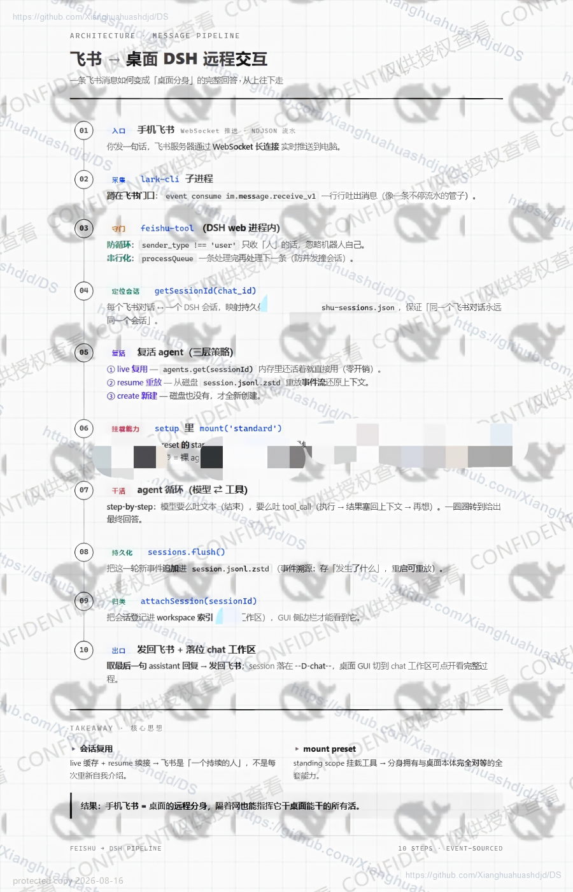

飞书与桌面 DeepSeek Harness：实现手机飞书远程完全对等交互
Feishu and Desktop DeepSeek Harness: Enabling Fully Peer Remote Interaction from Mobile Feishu
Repository: github.com/Xianghuahuashdjd/DS

Feishu and Desktop DeepSeek Harness: Enabling Fully Peer Remote Interaction from Mobile Feishu
Repository: github.com/Xianghuahuashdjd/DS
